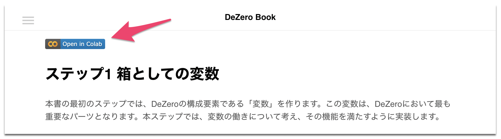

「ゼロから作るDeep Learning」オンラインブック¶

ここでは『ゼロから作るDeep Learning ❸ ―フレームワーク編』の一部を公開しています。
興味のある方は、ぜひご覧ください。
必要なのはブラウザだけ
本ページのコードはGoogle Colab上で実行することができます。つまりブラウザだけあれば、文章を読んで、コードを実行することができます。各ページでは、次のように「Open in Colab」というボタンが表示されます。
上のボタンを押すと、本ページの内容がそのままGoogle Colab上で実行することができます。
英語ページ
できるだけ多くの方に読んでもらうために、英語ページも用意しています。こちらは機械翻訳をベースにしたもので、まだ多くの改善が必要です。英語のブラッシュアップに協力していただける方は、指摘していただければ幸いです。なお、本ページの内容はgithubで管理しているので、Pull Requestなど大歓迎です。
目次
質問・不明な点などは、下記のメールアドレスまでお問い合せください。
dl3@oreilly.co.jp